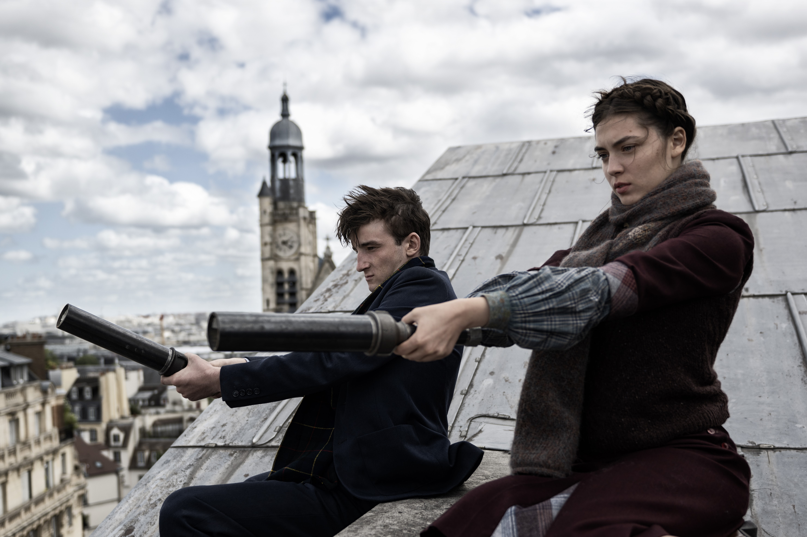
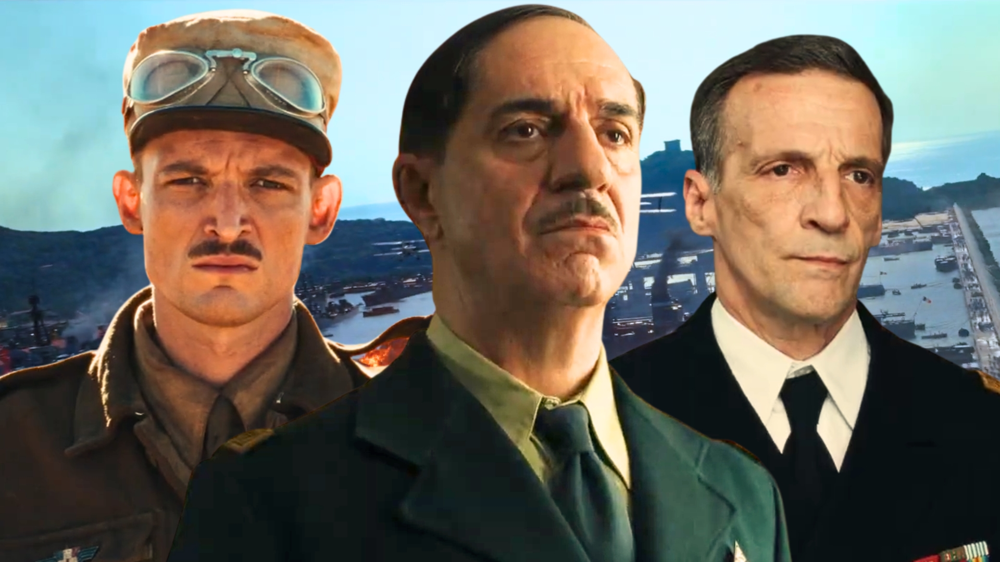

Note : 3/5
Un bon film, mais sans plus. Plus convaincant comme fresque de la France libre que comme portrait de De Gaulle.
Le côté Résistance, la vraie réussite du film
Le coté Resistance du film est franchement bonne et avoir ce coté "civil" en pleine guerre et qui veut se terminer d'une façon pas espéré est réussi. C'est clairement la partie la plus reussite du film, plus que De Gaulle lui meme.

De Gaulle : une combativité plaisante mais une progression trop rapide
Le coté de De Gaulle est sympa, on voit qu'il est passionné et veut récupérer SA France, c'est plaisant a voir cette combativité. Toutes les portes sont fermés pour lui, dont sa France et pourtant il veut et il va se retrouver au sommet. Sauf que le film le montre constamment en echec au début, que des refus, son pays le renie de tous ses grades ect.. et meme ça, on n'a pas vraiment les conséquences, il vit a Londres tranquillement entre deux. Il y a bien des scenes qui l'humanisent, comme sa famille qui vient le voir a Londres ou quand il s'éloigne a cause d'une mutinerie dans sa campagne et se retrouve aupres des siens avant d'etre rappelé, c'est correct, mais c'est tout. Parce que d'un coup il a tout gagné et conquit l'afrique en 3 minutes alors que 20 minutes avant il galerait a avoir 2 soldats chez lui.. ça casse un peu l'envie de le voir vraiment progresser.

Mise en scène : convaincant à la guerre, en roue libre dans les scènes civiles
Les plans du films sont bons, je voyais beaucoup de fond vert pour les décors maritimes mais ça ne reste pas mauvais. Les scènes de guerres sont reussites par contre, des gros plans larges qui montrent bien l'intensité et le volume des consequences d'une guerre sur les soldats. Mais les scènes d'actions civiles sont bonnes mais pas excellentes, beaucoup de cut et la caméra tourne beaucoup en rond, l'exemple avec la grande manifestation montre bien de quoi je parle. On voit qu'il y a du monde, mais ils ne montrent pas vraiment ce monde et font juste des mouvements étranges avec la caméra proche sur Fernand pour prouver qu'il y a du monde, alors qu'un plan large sur l'Arc de Triomphe conquit par les Résistants aurait fait largement plus d'effet.
Des dialogues d'une autre époque
Les discussions dans le film sont ok, il y a de la fermeté et des conséquences dans chaque parole prononcée. C'est plaisant a entendre et surtout ça utilise un dialogue qui n'est plus utilisé dans notre époque.
Un casting parfait, des seconds rôles trop effacés
Les acteurs sont vraiment bien choisit, ils sont vraiment dans leurs personnages et le caractère y est. Surtout De Gaulle, c'est un cast parfait ! Dommage par contre que ses sbires n'avancent a rien dans l'histoire pour lui, c'est juste des infos posées sur un humain, genre il donne les infos des autres et fin. Il n'y a pas cette profondeur entre De Gaulle et ses "amis" ni avec sa famille, ça manque clairement.

Il y a un peu de bonne comédie dans le film et ça ne fait pas de mal, c'est subtile et bien amené.
Un rythme en dents de scie et un sujet qui s'efface
Maintenant c'est dommage que le film soit long et n'apporte pas grand chose a l'histoire de De Gaulle, j'avais plus l'impression de voir un film sur le second souffle de la France durant la Seconde Guerre Mondiale qu'un vrai film sur De Gaulle.. Et le rythme n'aide pas, beaucoup de moments de flottement et d'un coup le film repart vite, puis ça flotte a nouveau et ça repart, c'est pas régulier.
Je peux comprendre que le film divise sur certains point, comme l'enjeu des personnages secondaires, c'est vrai qu'un Roosevelt qui menace la Grande-Bretagne j'y croyais pas trop par exemple.. et c'est dommage sur ça.
Je disais que les mots ont des conséquences mais malheureusement les conséquences n'arrivent qu'aux Résistants et pas vraiment a De Gaulle.
Conclusion
Donc au final ça reste un bon film, mais sans plus et je pense baisser la note prochainement.
J'ai quand même envie de voir la suite.